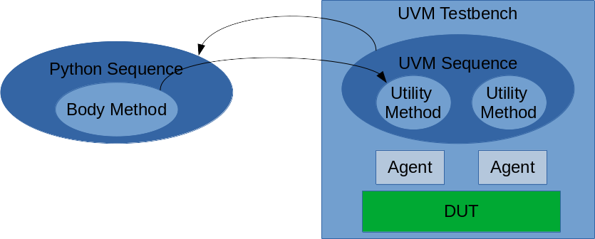
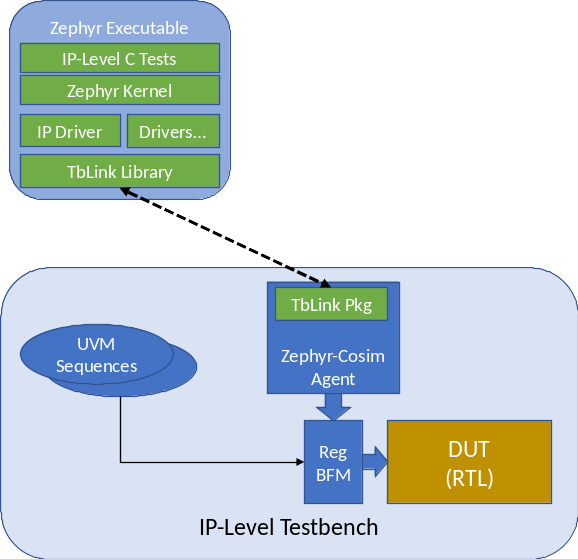

Functional verification testbench environments benefit from making use of code written in a variety of languages and integrated in a variety of ways. For example, it’s common to incorporate reference models written in C/C++ into a SystemVerilog UVM testbench for use by the scoreboard. It’s often desirable to incorporate test content written in a language such as Python in order to leverage the expertise of domain experts that aren’t experts in SystemVerilog or UVM.
Integrating non-SystemVerilog code into a SystemVerilog environment
typically involves two key challenges. SystemVerilog provides the
Direct Procedural Interface (DPI), which enables global C functions
to be registered with the simulation and called. A custom integration
must be designed for each code module. If the code module isn’t
pure C code – if it’s Python, for example, or if it needs to
run as a separate OS process – extra design effort will be required.
SystemVerilog UVM testbench code is object oriented, while the DPI
has no knowledge of or direct support for identifying and interacting
with class instances. Additional design and implementation work is
required in order to interact between foreign code and
SystemVerilog at the class object level.
The primary mission of TbLink-RPC is to enable code modules written in multiple languages to be easily and seamlessly integrated into testbench environments with a minimum of effort and maximum reuse. TbLink employes a combination of environment-specific libraries and automated code generation to allows object-oriented languages to interact at the class object level.

UVM virtual sequences are typically written at the application level, and may exercise the design using reference data. Python excels at capturing this type of software-level test behavior. It also has easy access to libraries for loading, creating, and manipulating reference data.
In this usecase, the desired behavior is as follows:

The Zephyr RTOS provides support for host-compiling the OS, drivers, and application. The resulting executable can be used to support application development. It can also be used to co-simulate software behavior with a UVM testbench environment.
In this usecase, TbLink simplifies the integration process by:
TbLink-RPC is not yet in a suitable state for end users, but is in active development. If you’re interested, please see projects in the tblink-rpc organization. Here is a short overview of key projects.